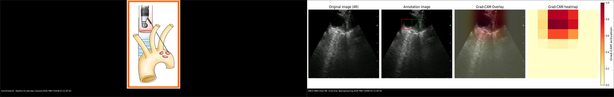
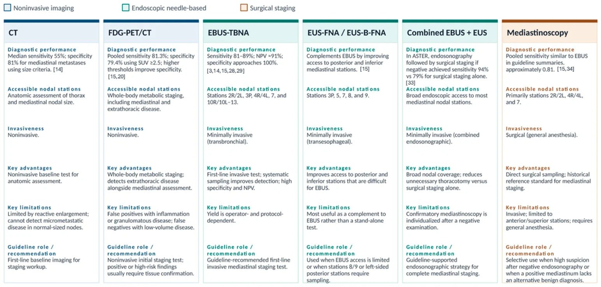
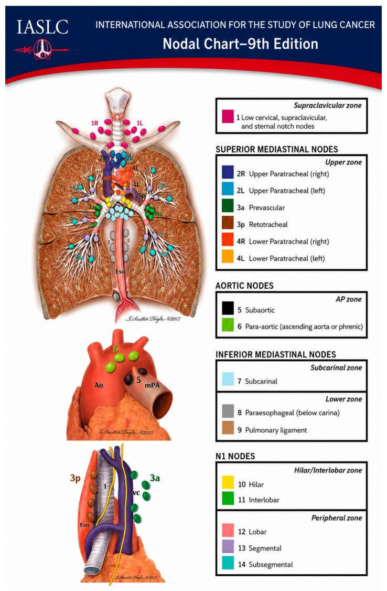
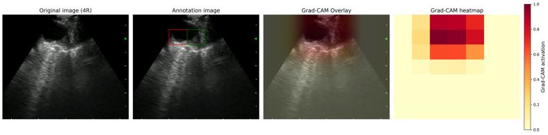
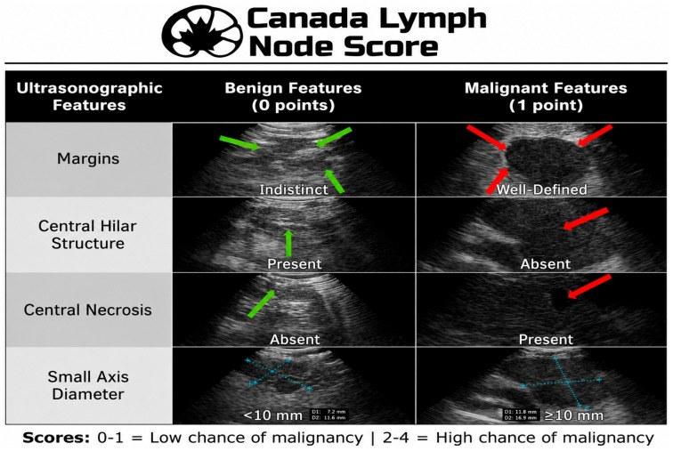
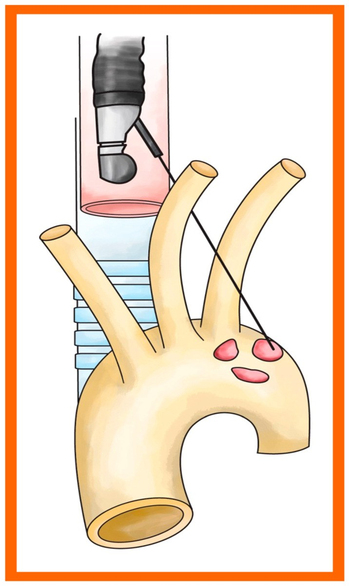
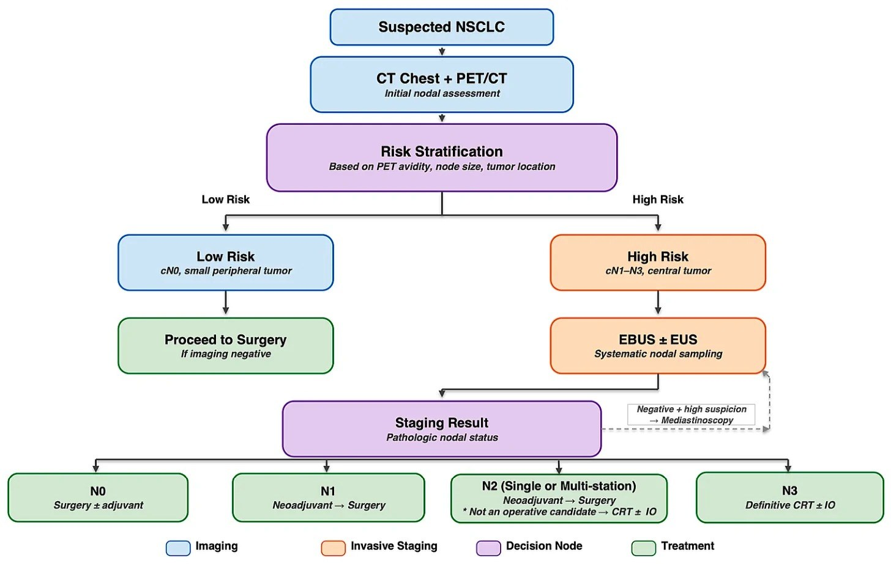
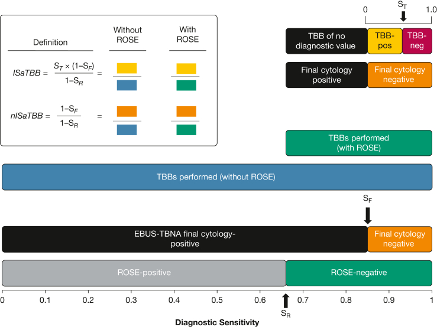

018 — Chọc hút hạch trung thất dưới hướng dẫn siêu âm: EBUS-TBNA & EUS-B / Endosonographic mediastinal nodal staging
Tags: pattern:hach vung:trung-that score:IASLC score:CLNS protocol:EBUS-TBNA protocol:EUS-B incidentaloma:hach-trung-that
Mức chắc chắn (certainty): tổng hợp y văn (literature synthesis) — nhóm tự biên từ các bài tổng quan CC BY 4.0 (Europe PMC: Alkathiri & Liberman Cancers 2026, PMC13204510; Haimi & Rajaram Cancers 2026, PMC13510314; Ervik et al. Bioengineering 2026, PMC12938215), không gắn một ca nguyên văn đơn lẻ; số liệu giữ đúng nguồn, chỗ chưa kiểm chứng ghi "chưa rõ".
1. Tổng quan bệnh học – cơ chế hình ảnh
- Vì sao phải lấy mô hạch (tissue confirmation): giai đoạn hạch (N) quyết định khả năng mổ, phác đồ hóa–miễn dịch và tiên lượng. CT và PET/CT định vị hạch nhưng không xác định bản chất mô → "hạch to" trên ảnh vẫn cần kim/sinh thiết chứng minh ác hay lành. Với thuốc chống ung thư miễn dịch, sai giai đoạn = sai phác đồ và sai chỉ định mổ.
- Ngưỡng định lượng của hình ảnh (chốt của "cửa 1"):
- CT: đường kính trục ngắn ≥ 1 cm (10 mm) là ngưỡng bất thường kinh điển — nhưng chỉ có Se trung bình ~55% và Sp ~81% (Haimi & Rajaram 2026): không phân biệt được hạch viêm tăng sản với di căn và bỏ sót vi di căn ở hạch bình thường về kích thước.
- PET/CT: dương tính giả do viêm/u hạt (sarcoid, lao) và âm tính giả ở hạch < 1 cm** (vi di căn). Nâng ngưỡng lên **tỉ lệ hạch/máu trung thất > 1,7 hoặc SUV hạch > 3,9 thì cải thiện Sp lên 79–90% mà vẫn giữ Se ~91%.
- Nguy cơ hạch ẩn (occult N2) khi hạch nhỏ/bình thường: u trung tâm 20–25% có N2/N3 dù hạch không to; ngược lại u ngoại vi ≤ 3 cm + CT và PET/CT âm → nguy cơ thấp, có thể không bắt buộc lấy mô trước mổ.
- Cơ chế hình ảnh của siêu âm nội soi (TẠI SAO thấy được hạch): đầu dò cong (convex-probe) áp sát vách khí quản/thực quản phát sóng âm tần số cao → hạch (tổ chức mềm giàu tế bào, ít khí) hồi âm trung bình–giàu, phân biệt được với mặt phế quản đầy khí (không hồi âm); kim đi trong kênh song song nên quan sát được toàn bộ đường kim theo thời gian thực. Tín hiệu "cứng" trên siêu âm đàn hồi (elastography) và mẫu "mạch máu–trung tâm" (central hilar structure) là các đặc điểm vật lý của mô, không phải mô bệnh.
- Nguyên lý 2 ngả (TẠI SAO cần cả EBUS và EUS): cùng một đầu dò đặt ở khí quản (EBUS-TBNA) hoặc thực quản (EUS-B-FNA) sẽ "nhìn" hai vùng giải phẫu khác nhau. Vì thực quản nằm sau–trái khí quản, EUS-B với tới được khoang chủ–phổi (trạm 5), cạnh chủ (trạm 6), cạnh thực quản (8), dây chằng phổi (9), thượng đòn 3p và cả tuyến thượng thận/tạng trong ổ bụng (nơi đánh dấu M1) — những chỗ EBUS không tới được.
- Ấn bản TNM 9 (2024–2025) — TẠI SAO đổi tên hạch: N2 (di căn hạch trung thất cùng bên) được chia N2a = MỘT trạm và N2b = NHIỀU trạm, phản ánh khác biệt tiên lượng: N2a sống thêm tốt hơn, tiếp cận cả mổ sau hóa–miễn dịch; N2b đa số không còn là ứng viên mổ (điều trị toàn thân ± xạ). N1 giữ nguyên, N3 giữ nguyên (trạm 2/4 đối bên, rốn phổi đối bên, trạm 1/thượng đòn–dưới đòn). Việc đếm đủ số trạm vì thế không còn là "chi tiết kỹ thuật" mà là yêu cầu phân giai đoạn.
2. Mẫu hình + chẩn đoán phân biệt theo vị trí (gamut)
Với hạch trung thất nghi ngờ trên CT/PET/CT, câu hỏi thực hành là "trạm nào? ngả nào tới được? lấy bao nhiêu?":
- N1 (trong phổi) — trạm 10, 11, 12, 13, 14: EBUS với tới 10, 11, 12 (rốn phổi/gian thùy). Xem bài 013.
- N2 cùng bên — trạm 2R/2L (dưới khí quản trên), 4R/4L (cạnh khí quản dưới), 3p (sau khí quản), 7 (dưới carina): EBUS-TBNA là ngả ưu tiên; trạm 5 (khoang chủ–phổi) và 6 (cạnh chủ) chỉ tới được bằng EUS-B.
- N3 — trạm 1 (thượng đòn/dưới đòn), 2/4 đối bên, rốn phổi đối bên: hạch thượng đòn quan sát được bằng cả hai ngả (EBUS qua khí quản, EUS-B qua thực quản) nhưng sinh thiết ở trạm 1 phải do trung tâm giàu kinh nghiệm thực hiện.
- Dưới hoành (đánh dấu M1): EUS/EUS-B với tới trạm thân tạng (celiac), tuyến thượng thận hai bên, thùy gan trái → một mũi kim có thể đổi giai đoạn từ III sang IV (và cứu bệnh nhân khỏi mổ vô ích).
- Khối trung thất không phải K phổi: u lympho (EBUS kém nhạy cho lymphoma: Se ~57–61%, âm tính không loại trừ → vẫn cần trung thất soi), u hạt (sarcoid, lao — dương tính giả), nang/những thực thể khác. Xem bài 060.
3. Bảng so sánh phân biệt (ma trận đối chiếu)
| Ngả lấy mô (modality) | Hình ảnh / cách tiếp cận | Chốt vào (rule-in) | Chốt loại (rule-out) | Gợi ý xác nhận |
|---|---|---|---|---|
| EBUS-TBNA (kim xuyên vách khí quản–phế quản) | Siêu âm cong, thời gian thực; tới trạm 1, 2R/2L, 3p, 4R/4L, 7, 10, 11, 12 | Hạch hồi âm trung bình nằm cạnh vách khí quản/phế quản + kim ± đường ngắm | Không tới được trạm 5, 6, 8, 9, thượng thận, gan trái — thiếu mẫu các vùng này không loại trừ di căn vùng đó | ≥ 3 lần kim/trạm; ROSE; mẫu cho mô bệnh + phân tử |
| EUS-B-FNA (cùng đầu dò EBUS, đặt trong thực quản) | Siêu âm 180°, tới trạm 2L, 4L, 5, 6, 7, 3p, 8R/L, 9R/L, celiac, thượng thận, gan trái | Hạch nằm ngoài khí quản, sát thực quản (đặc biệt trạm 5/6) — nơi EBUS "mù" | Chỉ dùng EUS bỏ sót trạm trên khí quản (1, 2R, 4R) | Phối hợp EBUS + EUS-B hệ thống (một đầu dò, một ca gây mê) |
| Trung thất soi (mediastinoscopy) | Phẫu thuật mở; chủ yếu trạm cạnh khí quản + dưới carina | Khi 2 ngả nội soi âm nhưng vẫn nghi cao; nghi u lympho | Bỏ sót trạm 5, 6, 8, 9 (sau/lệch bên) | "Tiêu chuẩn vàng" cũ, Se không 100%; mù ca mới 14% |
| CT (trục ngắn ≥ 1 cm) | Kích thước hạch | Hạch ≥ 1 cm = cờ gợi ý cần lấy mô | Hạch < 1 cm KHÔNG loại trừ (Se 55%) | Chỉ để chọn hạch cần chọc, không chứng minh bản chất |
| PET/CT | SUV, tỉ lệ hạch/máu trung thất | SUV > 3,9 hoặc hạch/máu > 1,7 → Sp 79–90%, Se 91% | Âm tính giả hạch < 1 cm; dương tính giả do sarcoid/lao | Luôn lấy mô xác nhận trước điều trị toàn thân |

Trái: EUS-B kim tới hạch trạm 6 (cạnh chủ) qua thực quản — vùng EBUS không với tới. Phải: EBUS-TBNA hạch trạm 4R với các đặc điểm siêu âm (margins, cấu trúc rốn hạch, hoại tử trung tâm). Ảnh ghép letterbox, giữ nguyên tỉ lệ. Nguồn: Alkathiri & Liberman Cancers 2026 (PMC13204510, CC BY 4.0) + Ervik et al. Bioengineering 2026 (PMC12938215, CC BY 4.0).Thang điểm Canada cho hạch trên siêu âm (Canada Lymph Node Score, CLNS)
Bốn đặc điểm siêu âm, mỗi đặc điểm 1 điểm, tối đa 4 điểm — dùng ngay lúc làm thủ thuật để quyết định chọc lại / chuyển trung thất soi:
| Đặc điểm siêu âm | Lành (0 điểm) | Ác (1 điểm) | Chốt vào (rule-in) | Chốt loại (rule-out) |
|---|---|---|---|---|
| Bờ hạch (margins) | Mờ, hòa lẫn xung quanh | Rõ nét | Bờ rõ | Bờ mờ |
| Cấu trúc rốn hạch (central hilar structure) | Còn | Mất | Mất cấu trúc rốn | Còn cấu trúc rốn |
| Hoại tử trung tâm (central necrosis) | Không | Có | Có hoại tử | Không hoại tử |
| Đường kính trục ngắn | < 10 mm | ≥ 10 mm | ≥ 10 mm | < 10 mm |
- Phân nhóm: 0–1 điểm = nguy cơ thấp; 2–4 điểm = nguy cơ cao (theo hình minh họa gốc).
- Điểm vận hành thường dùng ≥ 3 (nghiên cứu đa trung tâm Canada: 140 bệnh nhân, 300 hạch, 12 chuyên gia, mô bệnh là chuẩn vàng): Se 31,5% · Sp 96,3% · PPV 86,5% · NPV 65,4% → rất đặc hiệu để "chốt vào" ác tính, ít dùng để loại trừ.
- Cạm bẫy: CLNS là công cụ siêu âm, không thay mô bệnh; điểm thấp không loại trừ ác (Se thấp) → nếu nghi cao vẫn chọc lại/chuyển trung thất soi.
4. Protocol chụp + hệ phân độ/điểm chuẩn hóa
Trước thủ thuật: CT ngực cản quang đa thì + PET/CT (chọn hạch đích, loại hạch "giả"); đánh giá nguy cơ N2/N3 ẩn (u trung tâm, u > 3 cm, nghi N1). Với hạch dương PET/CT và bệnh nhân có yếu tố nguy cơ → đi thẳng nội soi lấy mô, không cần xác nhận thêm bằng hình ảnh.
Gây mê: thường an thần sâu/mê ngắn; nguy cơ giảm oxy máu ở bệnh nhân suy hô hấp → theo dõi oxy, chọn thuốc an thần phù hợp.
Kỹ thuật lấy mẫu:
- ≥ 3 lần kim cho mỗi trạm (được xem là tối ưu cho "có chẩn đoán"); lấy thêm trạm để phân biệt N2a vs N2b (một trạm vs nhiều trạm).
- Khi cần xét nghiệm phân tử (EGFR/ALK/ROS1...): tăng số lần kim/trạm; dịch rửa kim (needle rinse) là mẫu tốt hơn cho giải trình tự; tránh nhiễm bẩn, tránh mẫu hoại tử.
- ROSE (đọc tế bào học tại chỗ): không được chứng minh tăng tỉ lệ có chẩn đoán, nhưng giảm số lần kim và số tiêu bản, có thể giảm số ca phải làm lại.

Bảng so sánh CT, FDG-PET/CT, EBUS-TBNA và EUS-FNA cho giai đoạn hạch trung thất NSCLC (giá trị gần đúng tổng hợp từ y văn trong bài gốc). Nguồn: Haimi & Rajaram, Cancers 2026 (PMC13510314), CC BY 4.0.
Tai biến: nội soi siêu âm 1–2% biến chứng, tử vong ~0,04% (chủ yếu giảm oxy thoáng qua, chảy máu nhẹ); trung thất soi 2–3%, tử vong ~0,08% (chấn thương mạch lớn). EUS hướng dẫn sinh thiết phổi ghi nhận không có tràn khí màng phổi/biến chứng thực quản ở một loạt bệnh nhân (độ chính xác 94,5%).
Hiệu suất định lượng (chốt): phối hợp EBUS + EUS-B một đầu dò nâng độ nhạy giai đoạn trung thất từ 82% → 92%; gộp chung endosonography (Se 91%, Sp 100%, NPV 96%, độ chính xác 97%) còn phát hiện thêm N2/N3/M1 ở 14% ca vốn được trung thất soi coi là âm → tránh mổ vô ích. So với một ngả đơn, phối hợp có thể tăng Se tới 21%.
flowchart TD
A[K phổi nghi ngờ - CT ngực cản quang + PET/CT] --> B{Hạch trung thất bất thường?}
B -->|Có: hạch to / PET dương| D[Lấy mô NGAY bằng EBUS-TBNA]
B -->|Không| C{Có yếu tố nguy cơ N2/N3 ẩn?<br/>u trung tâm, u > 3 cm, nghi N1}
C -->|Không: u ngoại vi ≤ 3 cm| E[Có thể bỏ qua lấy mô trước mổ]
C -->|Có| D
D --> F[EBUS-TBNA: ≥ 3 kim/trạm<br/>+ EUS-B nếu cần trạm 5, 6, 8, 9, thượng thận]
F --> G{Kết quả?}
G -->|Dương tính ác| H[Chốt N theo ấn bản 9:<br/>N2a = 1 trạm / N2b = nhiều trạm]
G -->|Âm nhưng vẫn nghi cao| I[Trung thất soi / chọc lại]
G -->|U lympho nghi ngờ| I
H --> J{N2a hay N2b?}
J -->|N2a| K[Có thể mổ sau hóa-miễn dịch]
J -->|N2b| L[Đa số không mổ: hóa-xạ toàn thân]
- Ấn bản TNM 9 (chỉ liệt kê phần N để đọc đúng): N1 — di căn hạch rốn phổi cùng bên và/hoặc nội phổi (không đổi); N2a — một trạm trung thất cùng bên; N2b — nhiều trạm trung thất cùng bên; N3 — trạm đối bên (2/4), hạch rốn phổi đối bên, hoặc trạm 1/thượng đòn.
5. Biến thể bình thường và cạm bẫy
- Hạch nhỏ nhưng vẫn ác (micrometastasis): ngưỡng 1 cm và PET đều bỏ sót — âm tính hình ảnh không loại trừ; nhớ yếu tố nguy cơ ẩn để quyết định lấy mô.
- Âm tính giả khi chọc: hạch hoại tử (lấy đúng vùng xơ/hang), xơ sau hóa–xạ, ít mẫu, tay nghề người làm; tránh lấy vào vùng hoại tử, lấy thêm trạm.
- Dương tính giả do u hạt: sarcoid/lao làm hạch to + ngấm PET và có thể đủ điểm trên CLNS → luôn cần mô bệnh.
- "Đường kim" không chỉ có 1: hạch có mạch máu trong rốn — không nhầm mạch máu với hạch; dùng Doppler/elastography để chọn vị trí an toàn (đặc biệt trạm 1, 4L cạnh ĐMC/cung ĐMC).
- U lympho: EBUS không đủ loại trừ (Se 57–61%) → âm tính mà nghi ngờ cao phải trung thất soi.
- Đừng quên tầng dưới hoành: chỉ cần EUS-B một mũi vào thượng thận/gan trái/celiac có thể chuyển M0 → M1, đổi hoàn toàn chiến lược.
- Bẫy phân đoạn: với ấn bản 9, đếm trạm (một hay nhiều trạm) quan trọng không kém việc có mô ác.
6. Tự lượng giá — Blind Quiz
Ca 1 — Bản đồ hạch IASLC ấn bản 9. Trước khi mở đáp án, chỉ ra 3 trạm EBUS KHÔNG tới được.

- Gợi ý lâm sàng: u phổi trái, cần xác nhận giai đoạn N.
- Câu hỏi: Kể tên các trạm chỉ EUS-B tới được? Trạm nào là N3 khi dương tính?
Bấm để hiện đáp án (findings + chẩn đoán)
- Bản đồ chia 4 nhóm: thượng đòn (1), trung thất trên (2R/2L, 3a, 3p, 4R/4L), khoang chủ (5, 6), trung thất dưới (7, 8, 9) + N1 (10–14).
- Trạm 5 (khoang chủ–phổi) và 6 (cạnh chủ) — EBUS không tới, phải EUS-B. Trạm 8 (cạnh thực quản) và 9 (dây chằng phổi) cũng thuộc EUS-B.
- N3: trạm 1 (thượng đòn/dưới đòn), trạm 2/4 đối bên, rốn phổi đối bên.
- Nguồn ảnh: Alkathiri & Liberman, Cancers 2026 (PMC13204510), CC BY 4.0.
Ca 2 — Kim trong hạch trạm 4R trên EBUS. Đọc các đặc điểm siêu âm.

Bấm để hiện đáp án (findings + chẩn đoán)
- Ảnh gốc là siêu âm EBUS hạch trạm 4R (bên trái) — khối hồi âm trung bình nằm sát vách khí quản; các panel còn lại là bản chú giải và bản đồ nhiệt của mô hình học sâu (minh họa vùng quan tâm mà thuật toán "nhìn").
- Điểm cần đọc cho CLNS: bờ hạch, cấu trúc rốn hạch, hoại tử trung tâm, trục ngắn ≥ 10 mm.
- Nguồn ảnh: Ervik et al., Bioengineering 2026 (PMC12938215), CC BY 4.0.
Ca 3 — Thang điểm Canada: hạch nào đáng nghi ác?

Bấm để hiện đáp án (findings + chẩn đoán)
- 4 tiêu chí, mỗi tiêu chí 1 điểm: trục ngắn ≥ 10 mm, bờ rõ, mất cấu trúc rốn hạch, có hoại tử trung tâm.
- 0–1 điểm = nguy cơ thấp; 2–4 điểm = nguy cơ cao. Điểm vận hành ≥ 3 rất đặc hiệu (Sp 96,3%) nhưng kém nhạy (Se 31,5%) → dùng để chốt vào ác, không dùng để loại trừ.
- Nguồn ảnh: Alkathiri & Liberman, Cancers 2026 (PMC13204510), CC BY 4.0.
Ca 4 — Vì sao phải bổ sung EUS-B?

Bấm để hiện đáp án (findings + chẩn đoán)
- Minh họa kim xuyên thực quản tới hạch cạnh chủ (trạm 6) — vùng EBUS mù. Phối hợp EBUS + EUS-B nâng độ nhạy từ 82% → 92% (một đầu dò, một ca thủ thuật).
- Nguồn ảnh: Alkathiri & Liberman, Cancers 2026 (PMC13204510), CC BY 4.0.
Ca 5 — Lưu đồ quyết định: bệnh nhân nào cần lấy mô NGAY?

Bấm để hiện đáp án (findings + chẩn đoán)
- Hạch dương trên hình ảnh → lấy mô ngay.
- Hạch âm nhưng có yếu tố nguy cơ N2/N3 ẩn (u trung tâm — nguy cơ 20–25%; u > 3 cm; nghi N1) → vẫn lấy mô.
- U ngoại vi ≤ 3 cm + CT/PET âm → nguy cơ thấp, có thể không lấy mô trước mổ.
- Nguồn ảnh: Haimi & Rajaram, Cancers 2026 (PMC13510314), CC BY 4.0.
Ca 6 — Đọc tế bào học tại chỗ (ROSE) giúp gì?

Bấm để hiện đáp án (findings + chẩn đoán)
- ROSE không được chứng minh tăng tỉ lệ có chẩn đoán, nhưng giảm số lần kim/số tiêu bản và có thể giảm số ca phải làm lại; hữu ích để đủ mẫu cho xét nghiệm phân tử.
- Nguồn ảnh: Gerbino et al., CHEST Pulmonary 2026 (PMC13419112), CC BY-NC-ND 4.0 — giữ nguyên bản, không cắt/ghép.
Bài liên quan chéo
- 001 – Tổng quan hệ Ngực
- 012 – Hạch trung thất IASLC & đường–dải (vùng–trạm, ngưỡng 10 mm)
- 013 – Hạch nội phổi (trạm 11–14) & nốt cạnh rãnh
- 022 – Khối phổi & TNM
- 060 – Khối trung thất ITMIG
- 041 – Tràn khí màng phổi (biến chứng thủ thuật ngực)
Ảnh
- 7 ảnh + 1 ảnh ghép trong
images/, nguồn & giấy phép từng ảnh ởimages/CREDITS.md. - Tải từ Europe PMC (bài CC BY 4.0, riêng ROSE là CC BY-NC-ND 4.0 giữ nguyên bản). Radiopaedia/AuntMinnie chỉ dẫn link trong
sources.md.
Không dùng để chẩn đoán độc lập khi chưa có người hướng dẫn.